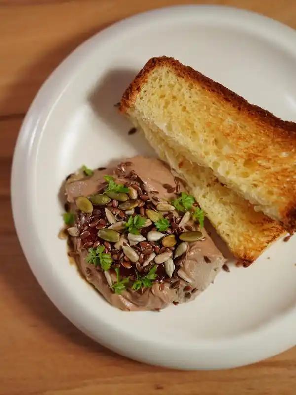
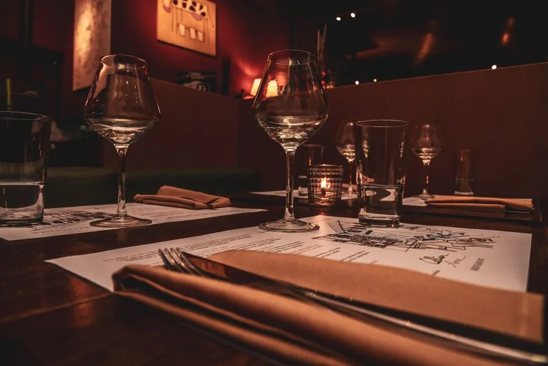
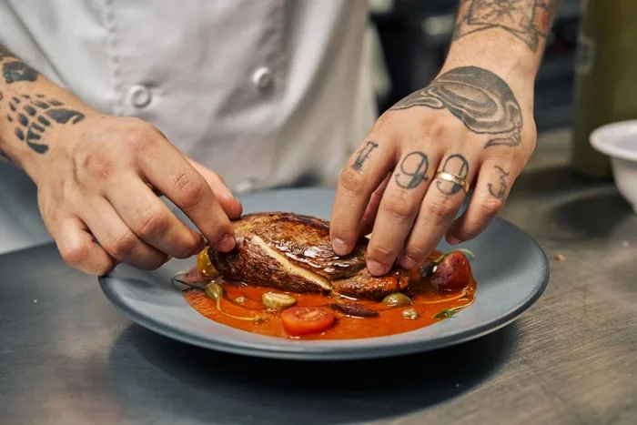
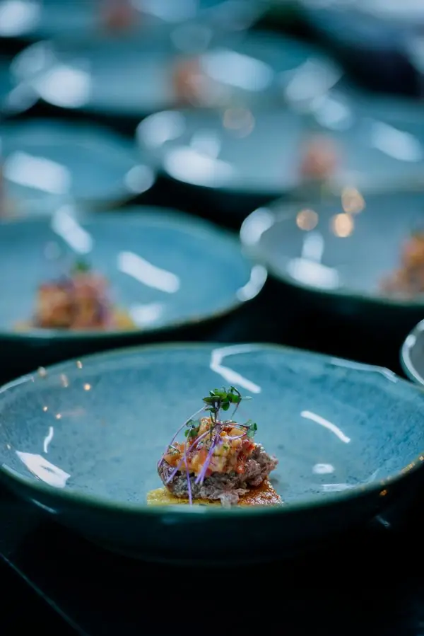
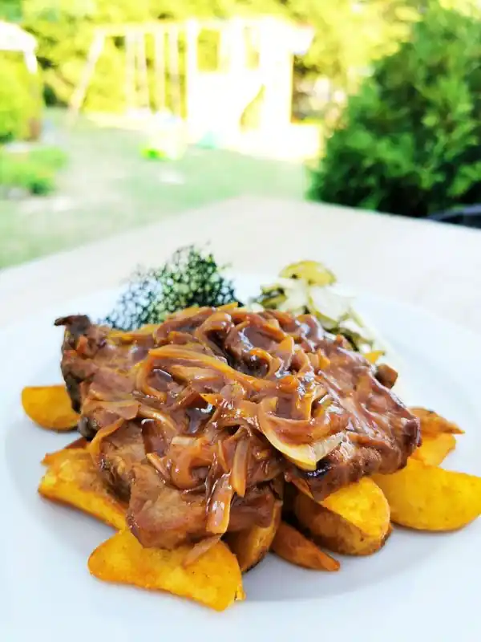
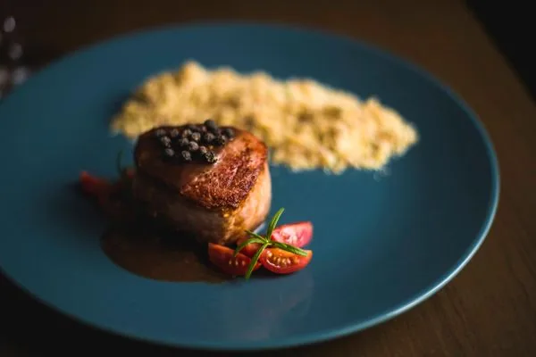
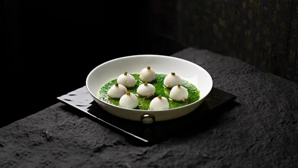
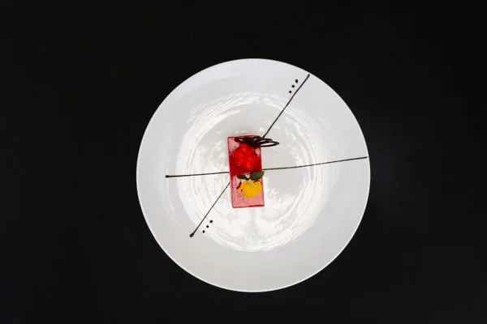
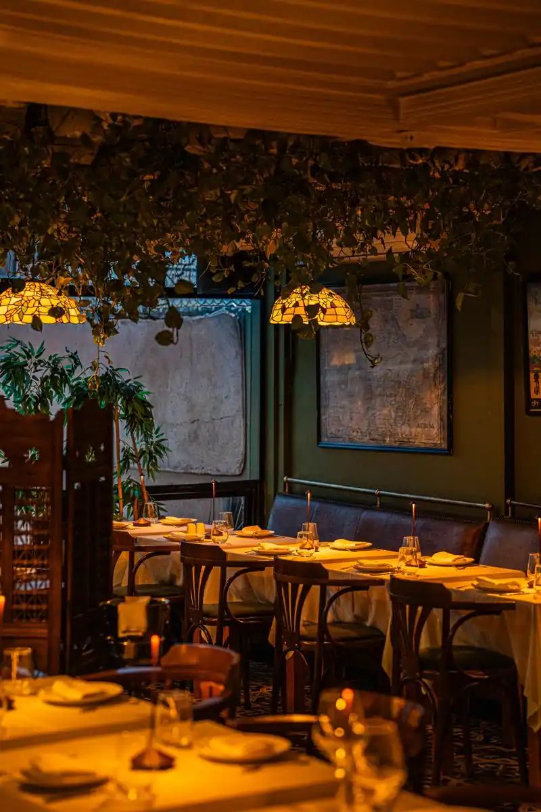

Ciğer musu
Soğukla sıcağın ilk karşılaşması; ciğer buraya sade geliyor, turşu tozuyla keskinleşiyor.

SAHAN, sokak ocağının hızını ve disiplinini masaya taşıyor — her akşam tek bir tadım menüsü, tek bir sıra, tek bir ateş.
Rezervasyon yap
SAHAN'ın çıkış noktası kâğıt külahta servis edilen tava ciğeridir — hızlı ocak, az malzeme, doğru sıcaklık. Mutfak bu disiplini bozmadan sofraya taşıyor: her akşam tek menü pişiyor, herkese aynı sırayla geliyor.
Kurslar arasında süs yok. Her tabak bir önceki kursun bıraktığı yerden devam ediyor — soğuktan sıcağa, hafiften ağıra, ocaktan tatlıya.
"Tavayı süslemiyoruz, zamanlıyoruz."
Kurslar geldikleri sırayla, tavanın kendi ritmiyle ilerliyor. Aşağıdaki bakır çizgi, akşamın neresinde olduğunuzu gösteriyor.

Soğukla sıcağın ilk karşılaşması; ciğer buraya sade geliyor, turşu tozuyla keskinleşiyor.

Ocağa geçmeden önce sofrayı ferahlatan tek deniz durağı; narenciye ve zeytinyağıyla.

Mutfağın adını taşıyan kurs — tavanın kendisi masaya geliyor, kavrulmuş soğan ve taze biberle.

Ciğerden sonra ateşin daha uzun süre konuştuğu tek kurs; karabiber sosu yalnızca eşlik ediyor.

Sofrayı ağırlıktan çıkarıp kapanışa hazırlayan ara nefes; otlu yoğurt sosuyla.

Sokak lezzetinin tatlı hafızası; kakao toprağıyla tabak kapanıyor.
On iki kişilik tek servis — herkes aynı ocağı, aynı sırayı paylaşıyor.

Akşam kursu 19:00'da başlıyor, herkes aynı anda oturuyor — sırayı bölmüyoruz.
Masa büyümüyor; rezervasyon dolduğunda o akşam kapanıyor.
Talebiniz doğrudan mutfağa düşer; boş yer varsa aynı gün, yoksa en yakın uygun akşamı size döneriz.
Doğrudan yazmak isterseniz: founder@ironvisiontools.com
Google Haritalar'da aç Harita, düğmeye basana kadar hiçbir isteği Google'a göndermiyor.